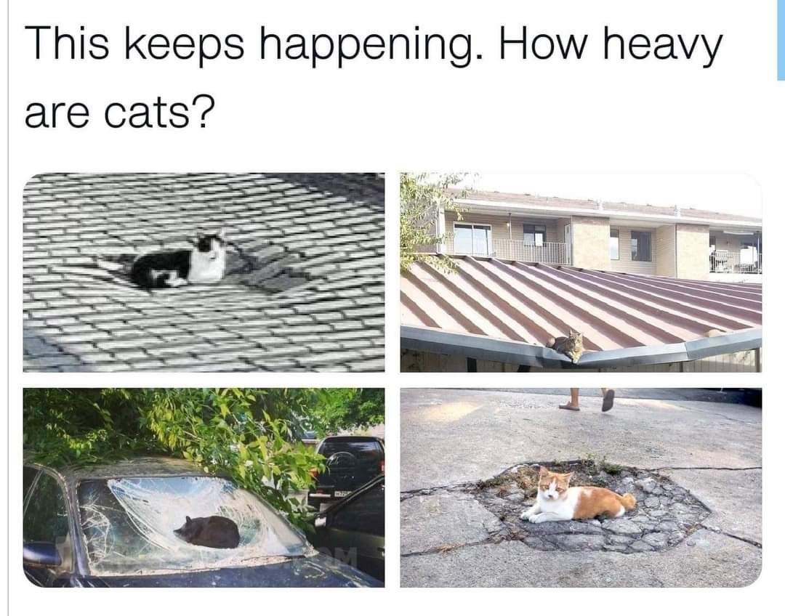
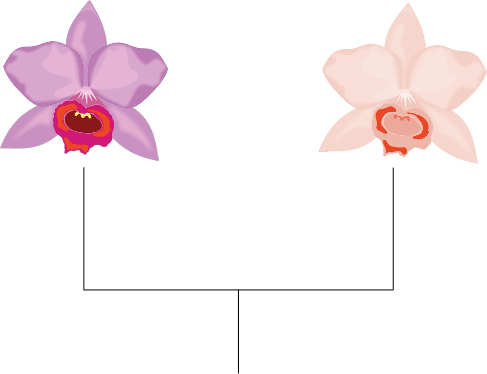

class: right, middle, title-slide, bg_citrus <h2>the roots of education are bitter but the fruit is sweet</h2> <br> <h3>on the development of biological understanding</h3> <br/> .left-align[ .contact[ .webpage[<i class="far fa-address-card"></i> <a href="https://ledelaney.org" target="_blank">@ledelaney.org</a><br>] <i class="fa fa-github"></i> <a href="https://github.com/ledelaney" target="_blank">@ledelaney</a><br> <i class="fa fa-twitter"></i> <a href="https://twitter.com/emergentlyLucy" target="_blank">@emergentlyLucy</a>]] .pull-bottom[ UC Riverside • August 2021] --- class: center, top, bg_walnut -- <br> <br> <h2>how do we teach our students so that they learn biology in a meaningful way?</h2> --- class: center, top, bg_walnut <br> <br> <h2>how do we teach our students so that they learn biology in a meaningful way?</h2> <br> .walnut-text[ <h3><i class="fas fa-project-diagram"></i> unique & complex challenges in the teaching & learning of biological sciences</h3>] --- class: center, top, bg_walnut <br> <br> <h2>how do we teach our students so that they learn biology in a meaningful way?</h2> <br> .walnut-text[ <h3><i class="fas fa-project-diagram"></i> unique & complex challenges in the teaching & learning of biological sciences</h3>] <br> .walnut-text[ <h3><i class="fas fa-user-graduate"></i> understanding these challenges can inform our teaching practices in powerful ways</h3>] --- class: top, center, bg_avo <h1>what does it mean to understand?</h1> -- <h2>understand <i class="fas fa-angle-double-right"></i> explanation</h2> --- class: top, center, bg_avo <h1>what does it mean to understand?</h1> <h2>understand <i class="fas fa-angle-double-right"></i> explanation</h2> <br> .left-align[ .large[ex•pla•na•tion ĕk″splə-nā′shən]] --- class: top, center, bg_avo <h1>what does it mean to understand?</h1> <h2>understand <i class="fas fa-angle-double-right"></i> explanation</h2> <br> .left-align[ .large[ex•pla•na•tion ĕk″splə-nā′shən<br> <i>n.</i> The act or process of explaining.<br> <i>n.</i> Something that explains.]] --- class: top, center, bg_avo <h1>what does it mean to understand?</h1> <h2>understand <i class="fas fa-angle-double-right"></i> explanation</h2> <br> .left-align[ .large[ex•pla•na•tion ĕk″splə-nā′shən<br> <i>n.</i> The act or process of explaining.<br> <i>n.</i> Something that explains.]] <br> -- .left-align[ .large[ex•plain ĭk-splān′<br> <i>intransitive verb</i> To make plain or comprehensible.<br> <i>intransitive verb</i> To define; expound.]] --- class: top, center, bg_avo <br> <h1>what does it mean to .strike[understand] explain?</h1> <br> -- <div class="circleWrapper"> <div class="circle"> <canvas id="canvas" width="500" height="200"></canvas> </div> </div> --- class: top, center, bg_avo <br> <h1>what does it mean to .strike[understand] <i>scientifically</i> explain?</h1> <br> -- <h3><i class="fas fa-check-double fa-lg"></i> relevant & compelling evidence</h3> --- class: top, center, bg_avo <br> <h1>what does it mean to .strike[understand] <i>scientifically</i> explain?</h1> <br> <h3><i class="fas fa-check-double fa-lg"></i> relevant & compelling evidence</h3> <h3><i class="fas fa-check-double fa-lg"></i> justification that demonstrates causality</h3> --- class: middle, center <blockquote class="twitter-tweet" data-dnt="true"><p lang="en" dir="ltr">What's the dumbest beliefs you had as a child?<br><br>When I was 4-5 I swore that bird seeds grew birds, thus the name. When my parents asked me to prove it to them, I planted a pile of bird seeds.<br><br>The next day there were loads of birds where I planted the seeds, showing I was right.</p>— _grimm (@ExileGrimm) <a href="https://twitter.com/ExileGrimm/status/1412448161688215553?ref_src=twsrc%5Etfw">July 6, 2021</a></blockquote> <script async src="https://platform.twitter.com/widgets.js" charset="utf-8"></script> --- class: middle, center  --- class: middle, center, bg_black .blacktitle[ <h2>explanation in biological sciences</h2>] -- .pull-low[ <img src="css/images/figs/confused.png" width="40%">] --- class: middle, center, bg_black .blacktitle[ .opaque[ <h2>explanation in biological sciences</h2>]] -- <h2 class="pull-left">adaptation<br>as a state</h2> --- class: middle, center, bg_black .blacktitle[ .opaque[ <h2>explanation in biological sciences</h2>]] <h2 class="pull-left">adaptation<br>as a state</h2> <h2 class="pull-right">adaptation<br>as a process</h2> --- class: middle, center, bg_black .blacktitle[ .opaque[ <h2>explanation in biological sciences</h2>]] .pull-left[ ] --- class: middle, center, bg_black .blacktitle[ .opaque[ <h2>explanation in biological sciences</h2>]] .pull-left[ ] .pull-right-wide[ .right-align[ .large[ What genes are responsible for flower color?]]] --- class: middle, center, bg_black .blacktitle[ .opaque[ <h2>explanation in biological sciences</h2>]] .pull-left[ ] .pull-right-wide[ .right-align[ .large[ What genes are responsible for flower color?<br> Are the genes homologous?]]] --- class: middle, center, bg_black .blacktitle[ .opaque[ <h2>explanation in biological sciences</h2>]] .pull-left[ ] .pull-right-wide[ .right-align[ .large[ What genes are responsible for flower color?<br> Are the genes homologous?<br> How common are mutations in these genes?]]] --- class: middle, center, bg_black .blacktitle[ .opaque[ <h2>explanation in biological sciences</h2>]] .pull-left[ ] .pull-right-wide[ .right-align[ .large[ What genes are responsible for flower color?<br> Are the genes homologous?<br> How common are mutations in these genes?<br> What is the biochemical pathway?]]] --- class: middle, center, bg_black .blacktitle[ .opaque[ <h2>explanation in biological sciences</h2>]] .pull-left[ ] .pull-right-wide[ .right-align[ .large[ What genes are responsible for flower color?<br> Are the genes homologous?<br> How common are mutations in these genes?<br> What is the biochemical pathway?<br> How does a mutation alter this pathway?]]] --- class: middle, center, bg_black .blacktitle[ .opaque[ <h2>explanation in biological sciences</h2>]] .pull-left[ ] .pull-right-wide[ .right-align[ .large[ What genes are responsible for flower color?<br> Are the genes homologous?<br> How common are mutations in these genes?<br> What is the biochemical pathway?<br> How does a mutation alter this pathway?<br> Floral color change lead to pollinator shifts?]]] --- class: middle, center, bg_black .blacktitle[ .opaque[ <h2>explanation in biological sciences</h2>]] .pull-left[ ] .pull-right-wide[ .right-align[ .large[ What genes are responsible for flower color?<br> Are the genes homologous?<br> How common are mutations in these genes?<br> What is the biochemical pathway?<br> How does a mutation alter this pathway?<br> Floral color change lead to pollinator shifts?<br> Pollinator shifts lead to reproductive isolation?]]] --- class: middle, center, bg_black .blacktitle[ .opaque[ <h2>explanation in biological sciences</h2>]] --- class: middle, center, bg_black .blacktitle[ .opaque[ <h2>explanation in biological sciences</h2>]] .pull-left[ <div class="circleBase circle1"> .ecology[ecology]</div>] .pull-right[ <div class="circleBase circle2"> .evo[evolution] </div>] --- class: right, middle, bg_apple .appletitle[ <h3 style="color: #df6311; font-size: 200%;">how do we achieve conceptual understanding?</h3>] --- class: right, middle, bg_apple .appletitle[ .opaque[ <h3 style="color: #df6311; font-size: 200%;">how do we achieve conceptual understanding?</h3>]] <h2>1. categorize</h2> <h2>2. integrate</h2> <h2>3. transfer</h2> --- class: right, middle, bg_apple <h2 style="font-size: 350%;">1. categorize</h2> <h2>2. integrate</h2> <h2>3. transfer</h2> --- class: right, middle, bg_apple <h2>1. categorize</h2> <h2 style="font-size: 350%;">2. integrate</h2> <h2>3. transfer</h2> --- class: right, middle, bg_apple <h2>1. categorize</h2> <h2>2. integrate</h2> <h2 style="font-size: 350%;">3. transfer</h2>